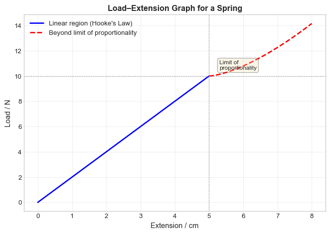

7 Forces
7.1 Learning Objectives
By the end of this chapter, you will be able to:
Core Content:
Know that forces may produce changes in the size and shape of an object
Sketch, plot and interpret load–extension graphs for an elastic solid and describe the associated experimental procedures
Determine the resultant of two or more forces acting along the same straight line
Know that an object either remains at rest or continues in a straight line at constant speed unless acted on by a resultant force
State that a resultant force may change the velocity of an object by changing its direction of motion or its speed
Describe solid friction as the force between two surfaces that may impede motion and produce heating
Know that friction (drag) acts on an object moving through a liquid or a gas (e.g., air resistance)
Supplement (Extended):
Define the spring constant as force per unit extension; recall and use the equation \(k = \frac{F}{x}\)
Define and use the term ‘limit of proportionality’ for a load–extension graph and identify this point on the graph
Recall and use the equation \(F = ma\) and know that the force and the acceleration are in the same direction
Describe, qualitatively, motion in a circular path due to a force perpendicular to the motion
7.2 Effects of Forces
7.2.1 What Can a Force Do?
A force is a push or a pull that can produce several effects on an object:
| Effect | Example |
|---|---|
| Change in size/shape | Stretching a rubber band; compressing a spring |
| Change in speed | Accelerating a car; braking a bicycle |
| Change in direction | A tennis racket changing the path of a ball |
| Change in both speed and direction | A football being kicked into a curved trajectory |
Note
Key Concept: A force is a vector quantity—it has both magnitude (measured in newtons, N) and direction.
7.3 Load–Extension Graphs for Elastic Solids
7.3.1 What is an Elastic Solid?
An elastic solid is a material that returns to its original size and shape when the deforming force is removed (e.g., springs, rubber bands).
7.3.2 Experimental Procedure: Investigating Force and Extension
Apparatus:
Spring with hook
Retort stand, boss, and clamp
Metre rule (vertical)
Set of slotted masses (10 g to 100 g)
Pointer (optional, for precise reading)
Method:
Suspend the spring vertically from a fixed support
Measure the original length \(l_0\) with no load
Add known loads (weights) incrementally
Measure the new length \(l\) for each load
Calculate extension: \(x = l - l_0\)
Plot a graph of Load (F) on the y-axis against Extension (x) on the x-axis
7.3.3 Interpreting the Load–Extension Graph
Key Features:
| Feature | Description |
|---|---|
| Linear region | Load is directly proportional to extension (\(F \propto x\)); graph is a straight line through the origin |
| Limit of proportionality | The point beyond which the graph is no longer linear |
| Beyond limit | Extension increases more rapidly for the same increase in load; the material may not return to its original length |
7.3.4 Hooke’s Law and Spring Constant
Hooke’s Law (within the limit of proportionality): \[F = kx\]
Where: - \(F\) = force/load (N) - \(k\) = spring constant (N/m or N/cm) - \(x\) = extension (m or cm)
Spring constant (\(k\)) is defined as the force per unit extension: \[k = \frac{F}{x}\]
Interpretation: A stiffer spring has a larger \(k\) value (steeper gradient on the load–extension graph).
Warning
Important: Hooke’s Law applies only up to the limit of proportionality. Beyond this point, the relationship is no longer linear.
7.4 Resultant Force and Motion
7.4.1 Determining Resultant Force (Collinear Forces)
When multiple forces act along the same straight line:
Assign a positive direction (e.g., right = +, left = −)
Add forces algebraically, including their signs
Interpret the result: sign indicates direction; magnitude indicates size
Examples:
| Situation | Calculation | Resultant |
|---|---|---|
| 5 N right + 3 N right | \(+5 + (+3) = +8\) | 8 N right |
| 8 N right + 3 N left | \(+8 + (−3) = +5\) | 5 N right |
| 6 N left + 6 N right | \(−6 + (+6) = 0\) | 0 N (balanced) |
7.4.2 Newton’s First Law: Balanced Forces
An object either remains at rest or continues in a straight line at constant speed unless acted on by a resultant force.
| Initial State | Resultant Force = 0 | Resultant Force ≠ 0 |
|---|---|---|
| At rest | Remains at rest | Accelerates in direction of resultant force |
| Moving at constant velocity | Continues at constant velocity | Changes velocity (speed and/or direction) |
7.4.3 Newton’s Second Law: Unbalanced Forces
When a resultant force acts on an object: \[F = ma\]
Where: - \(F\) = resultant force (N) - \(m\) = mass (kg) - \(a\) = acceleration (m/s²)
Key implications:
Acceleration is directly proportional to resultant force (for constant mass)
Acceleration is inversely proportional to mass (for constant force)
Acceleration is in the same direction as the resultant force
7.4.4 Friction and Drag
Solid friction: The force between two solid surfaces in contact that opposes relative motion.
| Property | Description |
|---|---|
| Direction | Always opposes motion or attempted motion |
| Effect | Produces heating; can cause wear |
| Dependence | Depends on surface roughness and normal force; largely independent of contact area and speed (for solids) |
Drag (fluid friction): The resistive force experienced by an object moving through a liquid or gas.
| Property | Description |
|---|---|
| Direction | Opposes motion through the fluid |
| Dependence | Increases with speed, cross-sectional area, and fluid density |
| Examples | Air resistance on a cyclist; water resistance on a swimmer |
Note
Terminal velocity: When drag force equals weight (for a falling object), resultant force = 0, and the object falls at constant speed.
7.4.5 Circular Motion (Supplement)
An object moving in a circular path at constant speed is accelerating because its direction is continuously changing.
Requirements for circular motion:
A resultant force must act perpendicular to the velocity, directed towards the centre of the circle (centripetal force)
This force changes the direction of motion but not the speed
Qualitative relationships (for constant mass):
| If this increases… | With these constant… | Then this happens |
|---|---|---|
| Centripetal force | Mass, speed | Radius decreases |
| Centripetal force | Mass, radius | Speed increases |
| Mass | Speed, radius | Required force increases |
Warning
Common error: “Centrifugal force” is not a real force acting on the object—it is the sensation of inertia experienced in a rotating reference frame.
7.5 Key Concepts Summary
7.5.1 Core Concepts
Forces can change an object’s shape, speed, or direction
Load–extension graphs: Linear region obeys Hooke’s Law (\(F = kx\)); limit of proportionality marks the end of linearity
Resultant force: Vector sum of all forces; determines acceleration via \(F = ma\)
Balanced forces (\(F_{\text{res}} = 0\)) → no change in motion (Newton’s First Law)
Friction/drag: Resistive forces opposing motion; produce heating
7.5.2 Extended Concepts
Spring constant \(k = F/x\); steeper load–extension gradient = stiffer spring
Newton’s Second Law: \(F = ma\) with force and acceleration in same direction
Circular motion: Requires centripetal force perpendicular to velocity; qualitative relationships between force, mass, speed, radius
7.6 Common Misconceptions
7.6.1 ⚠️ Misconception 1: “A moving object needs a constant force to keep moving”
Incorrect: “If I stop pushing the trolley, it stops because the force is gone”
Correct:
An object in motion continues at constant velocity unless a resultant force acts (Newton’s First Law)
The trolley stops because friction (a resultant force) opposes its motion
In the absence of friction (e.g., in space), no force is needed to maintain motion
7.6.2 ⚠️ Misconception 2: “Heavier objects fall faster because gravity pulls them harder”
Incorrect: “A 10 kg stone falls faster than a 1 kg stone”
Correct:
Weight \(W = mg\), so heavier objects experience greater gravitational force
However, acceleration \(a = F/m = mg/m = g\) — mass cancels out
In a vacuum, all objects fall with the same acceleration (\(g \approx 10 \text{ m/s}^2\))
In air, differences arise due to air resistance (drag), not mass itself
7.6.3 ⚠️ Misconception 3: “The spring constant \(k\) changes if you stretch the spring more”
Incorrect: “If I double the load, \(k\) doubles”
Correct:
\(k\) is a property of the spring (material, coil diameter, wire thickness)
Within the limit of proportionality, \(k\) is constant; \(F\) and \(x\) change proportionally
Beyond the limit, Hooke’s Law no longer applies, but \(k\) itself does not change—the relationship simply becomes non-linear
7.6.4 ⚠️ Misconception 4: “Friction is always undesirable”
Incorrect: “We should eliminate all friction”
Correct:
Friction is essential for: walking (grip), braking (stopping), writing (pencil on paper), holding objects
We reduce friction where it causes energy loss (engine parts) or wear (bearings)
We increase friction where grip is needed (tyre treads, shoe soles)
7.6.5 ⚠️ Misconception 5: “Centripetal force is a new type of force”
Incorrect: “Centripetal force is an additional force acting on circular motion”
Correct:
“Centripetal” means “centre-seeking”; it describes the role of a force, not its origin
The centripetal force is provided by an existing force: tension (whirling ball), friction (car turning), gravity (planet orbiting)
There is no separate “centripetal force” to add to free-body diagrams
7.7 Worked Examples
7.7.1 Example 1: Spring Constant and Extension
Question: A spring has an original length of 12.0 cm. When a load of 4.0 N is applied, the length becomes 16.0 cm. (a) Calculate the extension. (b) Determine the spring constant \(k\) in N/cm. (c) Predict the length when a load of 7.0 N is applied (assume within limit of proportionality).
Solution:
(a) Extension: \[x = l - l_0 = 16.0 - 12.0 = \boxed{4.0 \text{ cm}}\]
(b) Spring constant: \[k = \frac{F}{x} = \frac{4.0}{4.0} = \boxed{1.0 \text{ N/cm}}\]
(c) New extension for 7.0 N: \[x = \frac{F}{k} = \frac{7.0}{1.0} = 7.0 \text{ cm}\] \[\text{New length} = l_0 + x = 12.0 + 7.0 = \boxed{19.0 \text{ cm}}\]
7.7.2 Example 2: Resultant Force and Acceleration
Question: A 2.5 kg trolley experiences a forward thrust of 12 N and a resistive force of 4.5 N. (a) Calculate the resultant force. (b) Determine the acceleration. (c) If the trolley starts from rest, what is its velocity after 3.0 s?
Solution:
(a) Resultant force (forward = positive): \[F_{\text{res}} = +12 + (-4.5) = \boxed{7.5 \text{ N forward}}\]
(b) Acceleration: \[a = \frac{F_{\text{res}}}{m} = \frac{7.5}{2.5} = \boxed{3.0 \text{ m/s}^2 \text{ forward}}\]
(c) Velocity after 3.0 s (from rest, \(u = 0\)): \[v = u + at = 0 + (3.0)(3.0) = \boxed{9.0 \text{ m/s forward}}\]
7.7.3 Example 3: Circular Motion (Supplement)
Question: A 0.5 kg object moves in a circular path of radius 2.0 m at constant speed 4.0 m/s. (a) Why is the object accelerating even though its speed is constant? (b) State the direction of the resultant force acting on the object. (c) If the speed is doubled while the radius remains constant, describe qualitatively how the required resultant force changes.
Solution:
(a) The object is accelerating because its direction is continuously changing. Acceleration is a change in velocity (which includes direction), not just speed.
(b) The resultant force acts towards the centre of the circle (centripetal force), perpendicular to the velocity at every point.
(c) For circular motion, the required centripetal force increases with the square of speed. If speed doubles (\(v \rightarrow 2v\)), the required force increases by a factor of four (\(F \rightarrow 4F\)), assuming mass and radius remain constant.
7.8 Practice Questions
7.8.1 Core Level
1. State two effects that a force can have on an object.
2. A spring extends by 3.0 cm when a load of 6.0 N is applied. Calculate:
- the spring constant in N/cm
- the extension when a load of 9.0 N is applied (within limit of proportionality)
3. Two forces act on an object along the same line: 8 N to the right and 3 N to the left. Calculate the resultant force and state its direction.
4. Explain why a cyclist must continue to pedal to maintain constant speed on a level road, even though Newton’s First Law states that no force is needed to maintain motion.
5. A 1.2 kg object experiences a resultant force of 6.0 N. Calculate its acceleration.
6. Describe one way to reduce friction between two solid surfaces.
7. Why does a parachute slow down a skydiver?
7.8.2 Extended Level
8. A load–extension graph for a spring is linear up to a load of 10 N, where the extension is 5.0 cm. Beyond this, the graph curves.
- Calculate the spring constant.
- What is the significance of the point (10 N, 5.0 cm) on the graph?
- If a load of 12 N produces an extension of 7.0 cm, explain why Hooke’s Law cannot be used to predict this extension.
9. A 1200 kg car accelerates from rest to 20 m/s in 8.0 s.
- Calculate the acceleration.
- Determine the resultant force acting on the car.
- If the engine provides a forward force of 4000 N, calculate the total resistive force.
10. An object moves in a circular path of radius 2.0 m at constant speed 4.0 m/s.
- (a) Why is the object accelerating even though its speed is constant?
- (b) State the direction of the resultant force acting on the object.
- (c) If the speed is doubled while the radius remains constant, describe qualitatively how the required resultant force changes.7.9 Laboratory Investigation
7.9.1 Experiment 4.1: Investigating Hooke’s Law
Objective: To determine the relationship between load and extension for a spring and to find the spring constant.
Apparatus:
Spring with hook
Retort stand, boss, and clamp
Metre rule (vertical)
Set of slotted masses (10 g to 100 g)
Pointer (optional, for precise reading)
Safety goggles
Variables:
Independent: Load/force \(F\) (N) — varied by adding known masses
Dependent: Extension \(x\) (cm) — measured change in spring length
Controlled: Same spring, same temperature, same method of reading, vertical alignment
Procedure:
Set up the apparatus as shown in the diagram, ensuring the metre rule is vertical and parallel to the spring.
Record the original length \(l_0\) of the spring with no load.
Add a 10 g mass (weight ≈ 0.1 N) to the hanger. Allow the spring to settle.
Record the new length \(l\). Calculate extension: \(x = l - l_0\).
Repeat steps 3–4, adding masses incrementally up to a maximum safe load (do not exceed the limit of proportionality).
Remove masses one by one, recording lengths to check for elastic behaviour (spring should return to original length when unloaded).
Tabulate results: Load \(F\) (N), Length \(l\) (cm), Extension \(x\) (cm).
Data Table:
| Load \(F\) (N) | Length \(l\) (cm) | Extension \(x = l - l_0\) (cm) |
|---|---|---|
| 0.0 | 0.0 | |
| 0.5 | ||
| 1.0 | ||
| 1.5 | ||
| 2.0 | ||
| 2.5 | ||
| 3.0 |
Analysis:
Plot a graph of Load \(F\) (N) on the y-axis against Extension \(x\) (cm) on the x-axis.
Draw the best-fit straight line through the linear region.
Calculate the gradient of the linear portion: \(\text{gradient} = \frac{\Delta F}{\Delta x} = k\) (spring constant).
Identify the limit of proportionality on the graph (point where linearity ends).
Precautions:
✓ Avoid parallax error: read the scale with eye perpendicular to the rule
✓ Allow the spring to settle before taking readings
✓ Do not exceed the elastic limit (spring should return to original length when unloaded)
✓ Wear safety goggles in case the spring breaks
Conclusion Template: “The load–extension graph was linear up to ______ N, confirming Hooke’s Law (\(F = kx\)) within the limit of proportionality. The spring constant was determined to be ______ N/cm. Beyond ______ N, the graph curved, indicating the limit of proportionality had been exceeded.”
Extension (Supplement):
Repeat the experiment with a different spring; compare spring constants
Investigate whether two springs in series or parallel obey a combined Hooke’s Law
7.10 Exam-Style Questions
7.10.1 Paper 1 Style (Multiple Choice)
1. Which statement about a spring obeying Hooke’s Law is correct?
A. Extension is inversely proportional to load
B. Load is proportional to extension
C. The spring constant decreases as load increases
D. The limit of proportionality is where the spring breaks
2. A 5.0 kg object experiences a resultant force of 20 N. What is its acceleration?
A. 0.25 m/s²
B. 4.0 m/s²
C. 20 m/s²
D. 100 m/s²
3. Which factor does not affect the magnitude of air resistance on a moving object?
A. Speed of the object
B. Cross-sectional area
C. Mass of the object
D. Density of the air
4. An object moves in a circular path at constant speed. Which statement is correct?
A. The object has zero acceleration
B. The resultant force is zero
C. The resultant force acts towards the centre of the circle
D. The velocity is constant
7.10.2 Paper 3 Style (Structured)
5. (a) Define the term resultant force. [1]
A box of mass 8.0 kg is pulled horizontally by a force of 50 N. The frictional force opposing motion is 18 N.
Calculate the resultant force on the box. [1]
Determine the acceleration of the box. [2]
If the box starts from rest, calculate its velocity after 4.0 s. [2]
Explain why the box eventually reaches a constant speed if the pulling force remains at 50 N. [2]
6. A student investigates the extension of a spring.
State Hooke’s Law. [1]
The student records the following data:
| Load F/N | 0 | 1.0 | 2.0 | 3.0 | 4.0 | 5.0 |
|---|---|---|---|---|---|---|
| Extension x/cm | 0 | 2.0 | 4.0 | 6.0 | 8.0 | 10.0 |
Plot a graph of Load F/N against Extension x/cm. [3]
Calculate the spring constant of the spring. [2]
State what happens to the graph if loads greater than 5.0 N are added. [1]
7. (a) Describe the motion of an object falling through air, from the moment it is released until it reaches terminal velocity. Include reference to forces and acceleration. [4]
- A skydiver of mass 70 kg falls at terminal velocity. Calculate the magnitude of the air resistance acting on the skydiver. Take \(g = 10 \text{ N/kg}\). [2]
7.11 Chapter Summary
7.11.1 Key Points to Remember
Forces can change shape, speed, or direction of an object
Hooke’s Law: \(F = kx\) (within limit of proportionality); \(k = F/x\)
Load–extension graph: Linear region → direct proportionality; limit of proportionality → end of linearity
Resultant force: Vector sum; \(F_{\text{res}} = ma\) (Newton’s Second Law)
Newton’s First Law: \(F_{\text{res}} = 0\) → no change in motion (rest or constant velocity)
Friction/drag: Opposes motion; produces heating; depends on surfaces/fluid properties
Circular motion: Requires centripetal force perpendicular to velocity; qualitative relationships
7.11.2 Formulae Sheet
| Quantity | Formula | Variables |
|---|---|---|
| Spring constant | \(k = \frac{F}{x}\) | \(k\)=spring constant, \(F\)=load, \(x\)=extension |
| Newton’s Second Law | \(F = ma\) | \(F\)=resultant force, \(m\)=mass, \(a\)=acceleration |
| Weight | \(W = mg\) | \(W\)=weight, \(m\)=mass, \(g\)=gravitational field strength |
7.12 Further Resources
7.12.1 Recommended Reading
- Cambridge IGCSE Physics Coursebook, Chapter 4 (Section 4.1 only)
- Practical Work in Physics: Forces and Motion
7.12.2 Online Resources
- PhET Interactive Simulations: Forces and Motion, Hooke’s Law
- BBC Bitesize: Forces, Friction, Motion
7.12.3 Video Resources
- Demonstration: Load–extension experiment and graph plotting
- Animation: Newton’s Laws in everyday contexts
- Real-world application: Engineering design for safety (seatbelts, airbags)
7.13 Glossary
| Term | Definition |
|---|---|
| Drag | Resistive force experienced by an object moving through a fluid (liquid or gas) |
| Elastic solid | A material that returns to its original size and shape when the deforming force is removed |
| Friction | Force between two solid surfaces in contact that opposes relative motion |
| Hooke’s Law | Within the limit of proportionality, extension is directly proportional to load: \(F = kx\) |
| Limit of proportionality | Point on a load–extension graph beyond which load is no longer proportional to extension |
| Newton’s First Law | An object remains at rest or in uniform motion unless acted on by a resultant force |
| Newton’s Second Law | Resultant force equals mass times acceleration: \(F = ma\); force and acceleration in same direction |
| Resultant force | Single force that has the same effect as all the individual forces acting on an object |
| Spring constant (\(k\)) | Force per unit extension: \(k = F/x\); measure of stiffness of a spring |
| Terminal velocity | Constant speed reached when drag force equals weight for a falling object |
End of Chapter 4